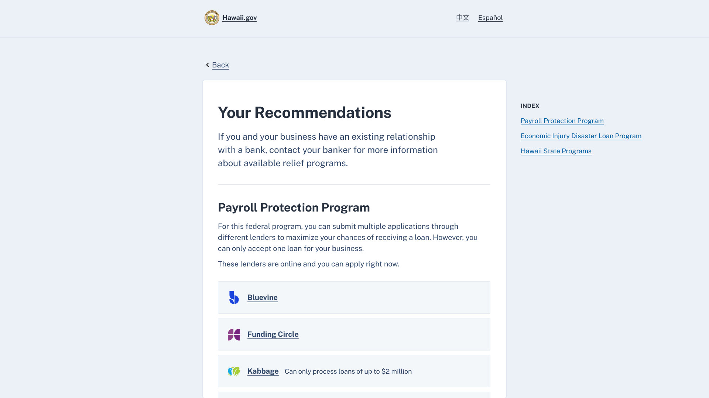

US Digital Response Helping small businesses find loans in a crisis
During the pandemic I volunteered to re-design an online loan eligibility checker used by several states to reach over 50,000 small business owners in need.

How might we simplify an eligibility checker?
I joined the US Digital Response's SMB Loans (Small Business Loans) team to volunteer time to help small business owners discover which programs they qualify for.
The team had already made a rough eligibility checker for the government of New Jersey, but it was long, tedious, and didn't always provide helpful results.

Applying one thing per page
I suggested a transition to one thing per page. This would:
- Reduce cognitive overload. Less questions per page means more space to provide hints, less height to scroll, easier error validation, and a sense of progression for the user.
- Improve flexibility. Providing questions one at a time allows us to branch questions. This reduces the amount of irrelevant questions and disabled states.
- Maximize accessibility. One thing per page is easier for screen-reader users to use and performs better on mobile devices.
To showcase the benefits, I whipped together a rough prototype using USWDS (US Web Design System) components in Sketch.
Original
My rough prototype ✨
Reducing decision paralysis on loan selection
Upon completing the form, a business owner would receive recommendations on the results page. However, too much information was a barrier to this goal.
From user and key informant interviews, we learned that finding the right provider in a haystack was challenging for folk without an existing bank relationship.
Before

I worked with our content writer to narrow down the provider list to a select few online lenders. Instead of quantity, we focused on the quality of lenders based on interviews conducted with local non-profit support groups.
After ✨
Impact
Our improved loan eligibility checker was adopted by several states and reached over 50,000 small business owners in need.
My time volunteering with the SMB Loans team was truly rewarding. If you're interested, consider helping out too with USDR!